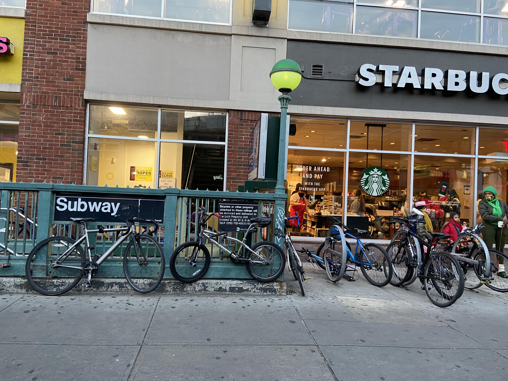

Source: NYC Open Data, Bicycle Parking
By Tasha Sandoval
December 20, 2021
The shortage of bicycle racks means cyclists lock their bikes to other structures, like subway entrances.
Photo by Tasha Sandoval
As the largest city in the United States, New York City only has about 28,000 bike racks installed throughout all five boroughs, according to the Department of Transportation. Bike around the city and chances are high that, depending where you are, you will be hard-pressed to find an available spot, or to even find a rack at all.
Cycling in the City, a 2021 DOT report, shows that bike ridership increased significantly in 2020 as a result of pandemic restrictions and limitations to transportation. 26% of adult New Yorkers ride their bike at least once per year and of that group, 45% ride their bikes at least several times per month. DOT’s bike count mechanisms, installed in 13 locations across the city, also collect more localized ridership data. In these locations, DOT bike counts identified a 33% growth in total cycling trips from 2019 to 2020, a surge that has been widely dubbed the New York City “bike boom.”
According to “The Power of Bicycle Parking,” a scathing January 2021 report from transit advocacy group Transportation Alternatives, there is one bicycle parking space for every 116 bikes in New York City. The report also compares NYC bike rack counts per 1,000 residents to that of other major U.S. cities. Portland, Oregon, for example, has more than twice the amount of bike racks per 1,000 residents.
Understanding bike ridership numbers is essential to understanding that 56,000 parking spots are not meeting demand. DOT Bike counts for the intersection of 50th St and 8th Ave in Midtown, for example, show that about 703,000 bikes passed through the intersection from January to August of 2021. Meanwhile, there are only two City Racks right at the intersection.
Further complicating this lack of bike parking is the fact that low-income neighborhoods with historic disinvestment have the worst bicycle infrastructure and the lowest count of bicycle parking in the city. The map above reflects this, particularly in low car-ownership areas like the Bronx, where there are considerably fewer racks than there are in the most gentrified corners of Brooklyn. Disparities are evident even within high-rack boroughs like Brooklyn, where the amount of racks in the highly-gentrified Community District 8 is nearly triple that of the amount of racks in Community District 5.
DOT has made efforts to acknowledge this lack of parking, like the pledge Commissioner Gutman made in early 2021 to add 10,000 new racks by the end of 2022. In an email to the NYC News Service, DOT insisted on this commitment: ““We have installed an unprecedented number of bike corrals this year as part of our pledge to provide more parking for the growing number of city cyclists.”
According to a September 2020 tweet by Bike New York, a cycling advocacy organization, the city has been inconsistent in its delivery of bike parking in the past, having failed to add 1,500 bike racks per year as it had pledged to do. In fiscal year 2020, the city fell quite short of the goal, installing only 642 new racks even as the bike boom took hold. Even if the city does meet its goal of 10,000 more racks by the end of 2022, it will need to make installations more equitable in order to accurately meet demand throughout the city.